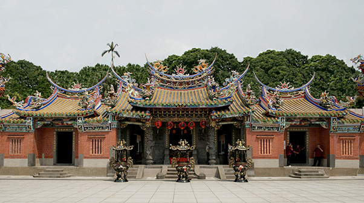

頂泰山巖介紹
本巖供奉主神「金面顯應祖師」，座落於應化街32號，1985年獲內政部指定為第三級古蹟(現為新北市市定古蹟)。  財團法人新北市泰山巖俗稱頂泰山巖、頂廟或崎仔腳廟，是泰山仙景李氏家族符記之族親於清乾隆年間(1754)，由福建泉州安溪湖頭鎮祖居地，奉迎顯應祖師寶像(老祖)來台崇祀，最初建廟廟名曰「福山巖」，清咸豐三年(1853)因分類械鬥慘遭兵燹，後由李家「七股」集資重建，約1874年改稱「泰山巖」；目前的廟宇規模係日治昭和期間(1932-1935)由著名大木匠師陳應彬率徒弟黃龜理等負責規畫建造。廟宇中的木、石雕刻及彩繪書畫等裝飾，由傳統民間故事或演義小說中取材，如二十四孝，岳母刺字、祖師祈雨解旱、華容道關公釋曹、關公戰黃忠取長沙等；這些作品除了富含藝術之美，更有著社會教化的功能。
顯應祖師俗名黃惠勝；因祈雨救旱靈驗，人稱黃水車。北宋元符2年(1099)生於福建永春縣，自幼拜師修道，精通禪理，博學多才，雲遊名山勝地，師到之處嗜義好施，廣行善事。北宋宣和6年(1124)雲遊至安溪湖頭感化里翠屏山峰頂結庵修行，因修道有成，為地方百姓解決很多問題。當地百姓感念其恩澤，在他圓寂後籌建一座廟以茲紀念，廟名「泰山巖」也稱「泰山寺」。相傳南宋紹興32年(1162)朝廷敇封「顯應普濟大師」，民稱「顯應祖師」。
本巖每年的農曆九月十八日，都會舉辦慶典科儀慶祝顯應祖師的誕辰。民國94年(2005)，由於距上次(1971)大規格整修已歷時34年，廟宇在歲月風霜侵蝕之下，瓦裂樑腐、逢雨必漏，在當時台北縣政府文化局主持「臺北縣第三級古蹟頂泰山巖修復工程」之下，再次展開大規格整修，於民國97年工程落成安座，次年舉辦啟建祈安醮典。
本巖以發揚顯應祖師的普濟眾生精神為職志，結合機關團體、善心人士，每年辦理許多公益、慈善活動，提升社會教化功能，促進社會祥和美滿。